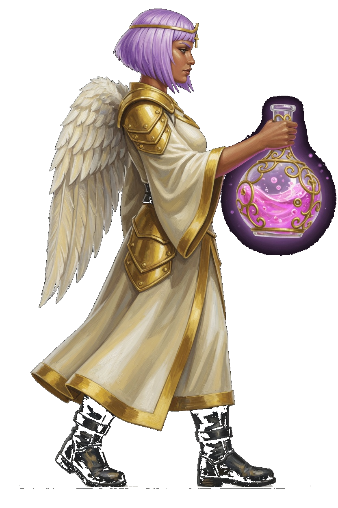
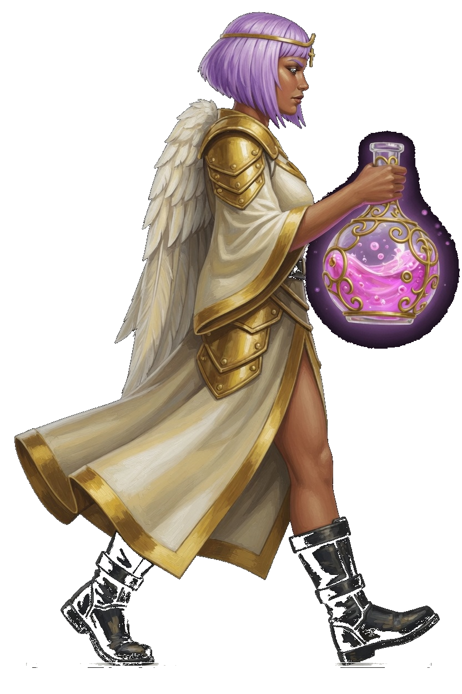
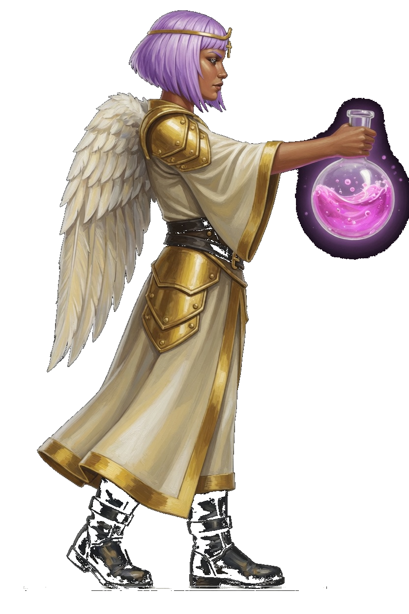
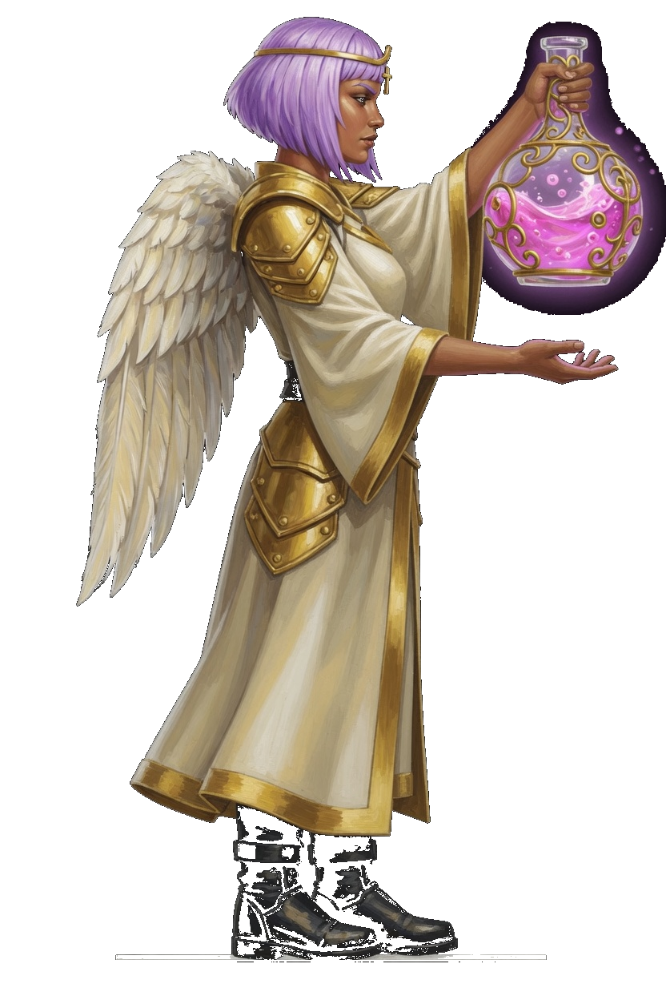
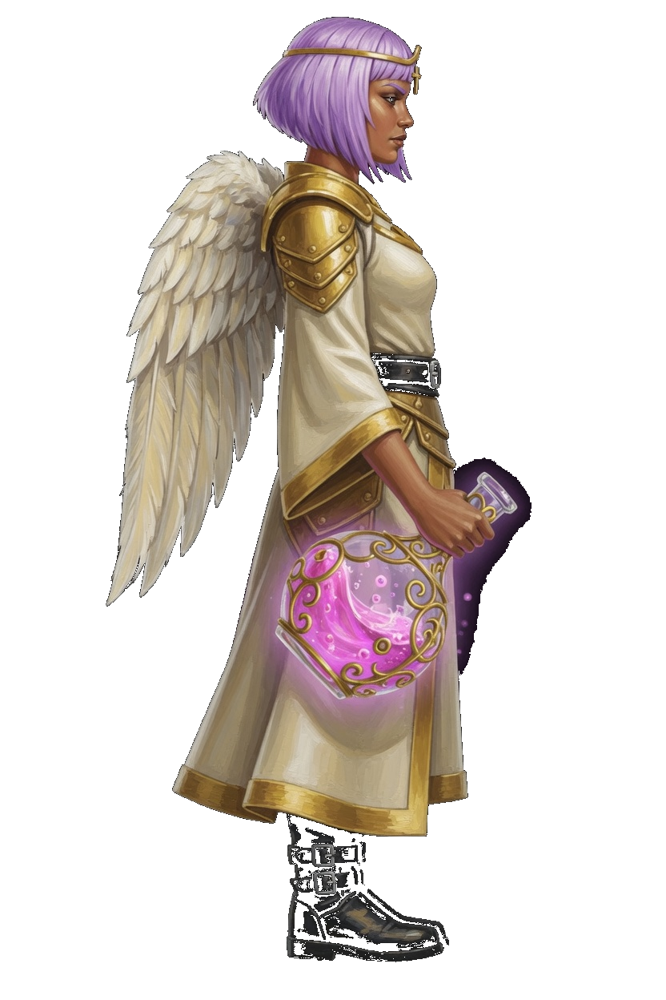
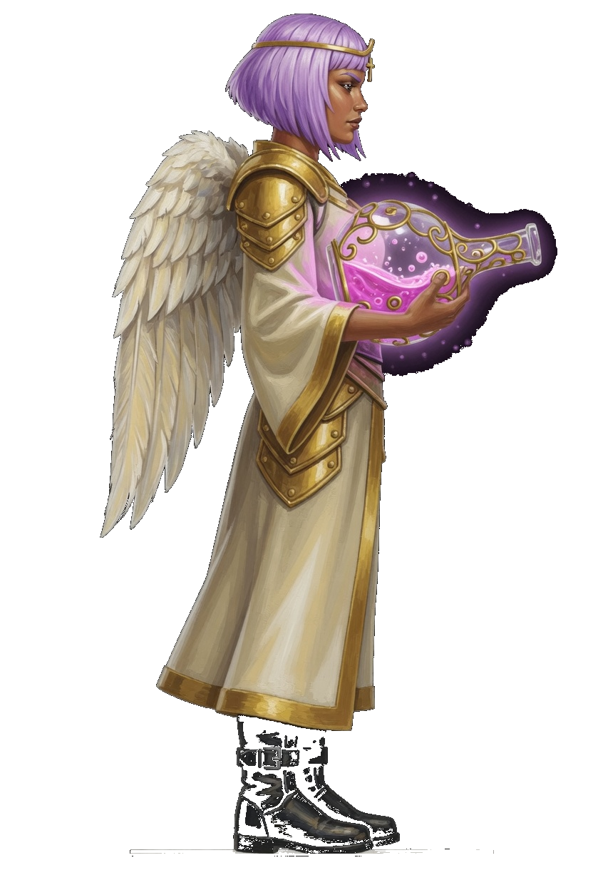
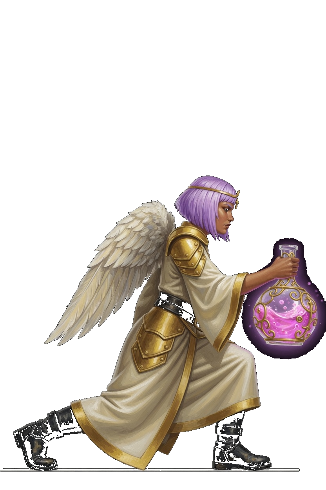
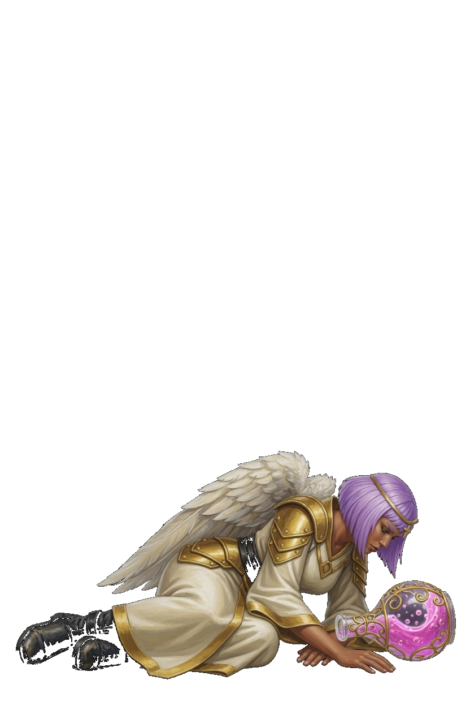
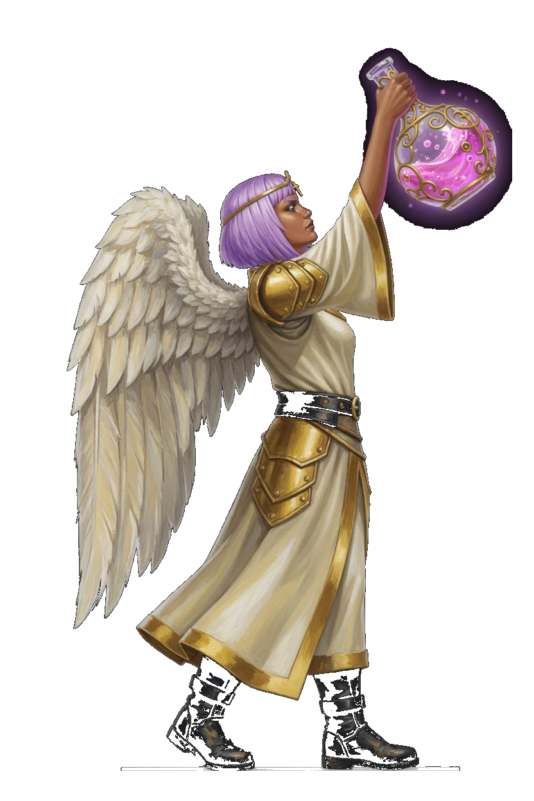

Sancora · Weave Chemist
This card is the only pose list. A later frame has to match one of these keys. Native facing is right. The whole sprite flips. Lavender bob, gold circlet, cream and gold robe, white wings held close, magenta flask in the forward hand. She is a gun, so the corner step is Slip. She has no move named Dash and no Close key.
| Book | Value |
|---|---|
| Basic | Chemist Vial · the flask · range 8.0 |
| Body | 580 health · 28 damage · 0.78 attacks/s · speed 3.2 · armor 4 · range 8.0 · mana 145 · regen 13 |
| Crit / cooldown | 0.13 crit · 0.72 cooldown scale |
| Cards | Regen · Giant · Aegis Gift |
| Moves | Chorus Flask · Weave Bloom · Cover |
| Stride | Slip · she is a gun · 30s · cost 8 |
What stays off the body
- Chemist Vial is a rose bolt from the flask. The glass stays in her hand.
- Chorus Flask keeps that book name. Orin's flask picture stays his. Her ring is the drink.
- Weave Bloom keeps that book name. Lyra's bloom picture stays hers. The bloom is the ring.
- Cover keeps that book name. Lightfather's ward picture stays his. The aegis is the ring.
Keys

Flask forward, both boots planted. This frame opens Chemist Vial, Chorus Flask, Weave Bloom, and Cover.

One stride. The right boot leads. The flask stays in the forward hand. The fight clip is idle, then this stride.

The flask is thrust ahead, still in the fist. Frame 1 and frame 3 are idle.

The flask is lifted for the line. The other hand is open. Frame 1 is idle. The book name stays Chorus Flask.

The flask tips down. The liquid stays in the glass. Frame 1 is idle. The book name stays Weave Bloom.

The flask is held across the chest. Frame 1 is idle. The book name stays Cover.

The corner step. A low lunge, flask still in hand. Frame 2 is idle. There is no Close key and no Dash key.

Down in the lower part of the canvas. The flask stays beside her.

The flask is raised overhead. Both boots are planted. This is not Chorus Flask.